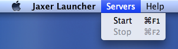
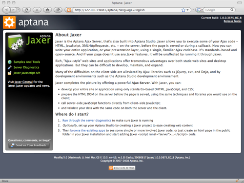

Launcher Help
How Do I...
see Jaxer or Apache server status?
Click the Jaxer icon in your dock to display the Jaxer Launcher screen. If your servers are running, their status will be green:

If your servers have stopped, their status will be red:

start or stop the Jaxer and Apache servers?
- Start: Click the Start Servers button on the Jaxer Launcher screen.
- Stop: Click the Stop Servers button on the Jaxer Launcher screen.
You can also use the CMD+F1/CMD+F2 or choose Stop or Start from the Servers menu:

determine where my HTML and PHP files are stored?
The files go in the Jaxer Apache Document Root; you can find the document root path by opening the Apache tab in your Jaxer Launcher preferences.

access the Jaxer Start Page?
Click the Jaxer icon in your dock to display the Jaxer Launcher screen, then click the Open start page button to open the Jaxer Start Page in your browser.

access the Jaxer Launcher preferences?
Click the Prefs... button on the Jaxer Launcher screen, use the OS X standard CMD+, key combination or off the Jaxer Launcher menu.

change the port used by Jaxer?
You can't as the Jaxer command port is set automatically.
change the port used by Apache?
Open Jaxer Launcher preferences, click the Ports tab and enter the desired port number.

stop Jaxer Launcher from asking me for a password when starting or stopping?
Most likely your Apache port is below 1024 and in Linux and Mac OS X systems you must have root permissions to start IP services with ports below 1024.
quit Jaxer Launcher?
Click the Quit button on the main Jaxer Launcher page, use the OS X standard CMD+Q key combination or choose Quit from the Jaxer Launcher menu.
access Jaxer Launcher help?
From the Help menu, select Jaxer Launcher Help

Jaxer Launcher is based on MAMP by living-e AG.